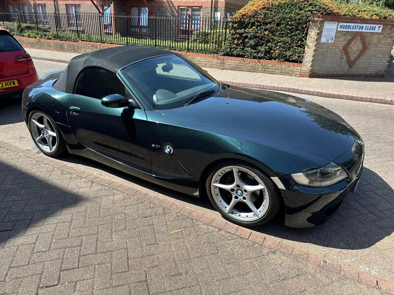
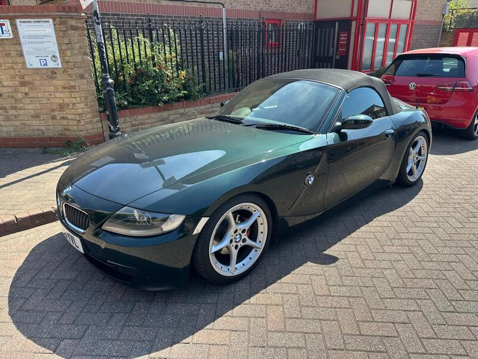
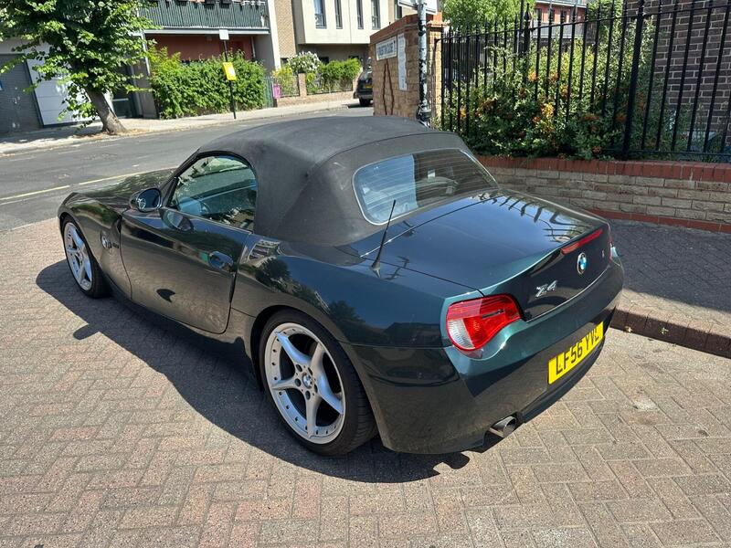
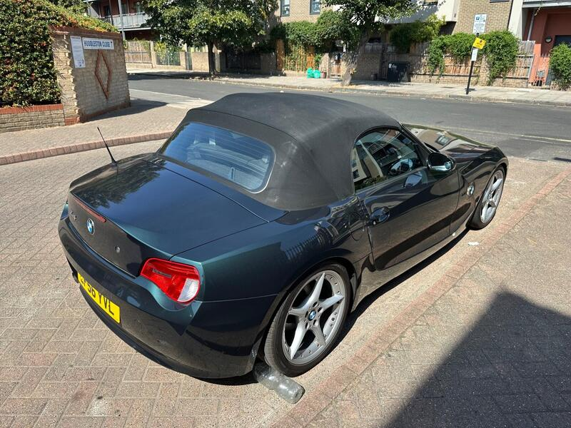

Seller photos from the AutoTrader ad.
BMW Z4 2.0i SE
The Z4's big roof-motor risk has already been fixed.
Key facts
| Price | £2,999 |
|---|---|
| Year | 2006 |
| Miles | 104,300 |
| Model | BMW Z4 2.0i SE |
| Colour | Green |
| Registration | 2006 (56 reg) |
| Owners | 7 owners |
| Service history | Not stated |
| MOT | Jan 2027 (ad) |
| Seller | Private |
| Location | Ilford |
| From GU7 | 39 mi (AutoTrader) |
| Checked | 13 Oct 2026 |
Why buy it
- Full service history
- New roof motor and hydraulic line (Zed Shed), new ball joints (ad)
Things to check
Coilovers fitted
6 owners, fixed price
- BMW Z4 E85 weak spots
Body resists rot well; rear brake lines corrode; occasional rear-arch blisters. Roof motor flooded by a blocked drain (dealer ~€1,200–1,500, specialist €200–400); cooling plastics (expansion tank, thermostat, water pump).
Seller says (extract)
“NO OFFERS! FIXED PRICE! BMW Z4 Mot Jan 27 Full service history 6 owners Recent major service carried out New suspension adjustable coilovers Front ball joints replaced Brand new roof motor and hydraulic line (zed shed) Gearbox fluid change Brake fluid flush No time wasters, bank transfer only No rush to sell if not sold by end of summer will go back in storage.…”